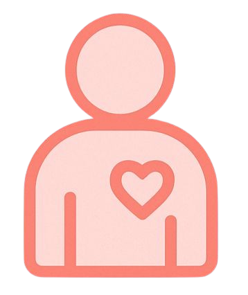
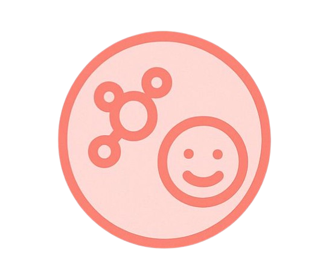
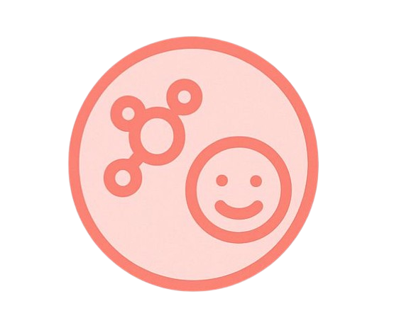

Puberdade e Corpo
 Voltar ao Início
Voltar ao Início
Seu corpo está mudando? Isso é natural!
Descubra o que acontece nessa fase e como se sentir bem com isso.
A puberdade é a fase em que o corpo se prepara para a vida adulta, passando por várias transformações físicas, hormonais e emocionais. Cada pessoa vive essas mudanças no seu próprio ritmo.
  Mudanças físicas: O corpo cresce rápido, aparecem características adultas e há alterações na pele e nos cabelos.
 Mudanças físicas: O corpo cresce rápido, aparecem características adultas e há alterações na pele e nos cabelos.- Mudanças hormonais e emocionais: Os hormônios aumentam, influenciando o humor e as emoções, o que é parte do desenvolvimento natural.
Ficou curioso(a) sobre as mudanças no corpo? Clique abaixo e descubra quais mudanças acontecem para meninos ou meninas!